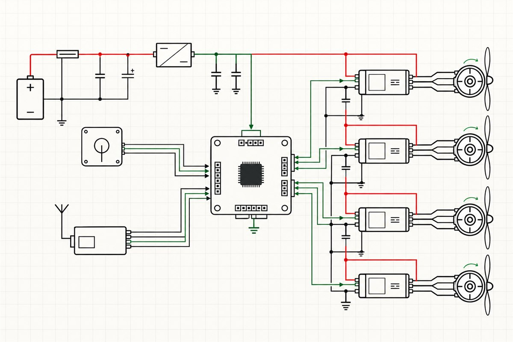

Qué encontrarás
- Símbolos eléctricos esenciales
- Rutas de potencia, tierra y señal
- Bloques funcionales del sistema de vuelo
Diseño e Ingeniería
Analiza cómo circulan la energía y las señales mediante símbolos y conexiones normalizadas.
Volver a Diseño e Ingeniería
Lee el esquema por bloques: alimentación, control, sensores y actuadores. Usa las referencias comunes para seguir cada señal.
Verifica siempre las especificaciones del fabricante y la compatibilidad eléctrica y mecánica antes de construir o energizar un sistema.